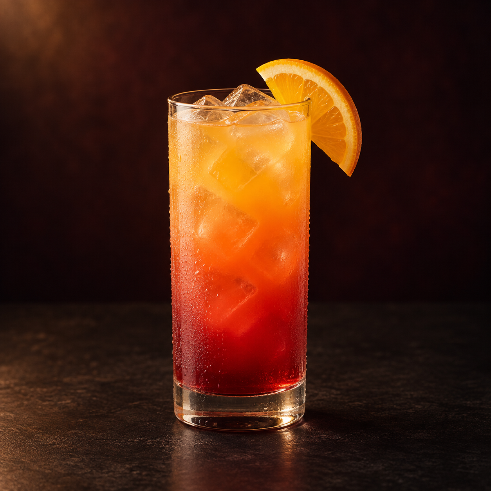
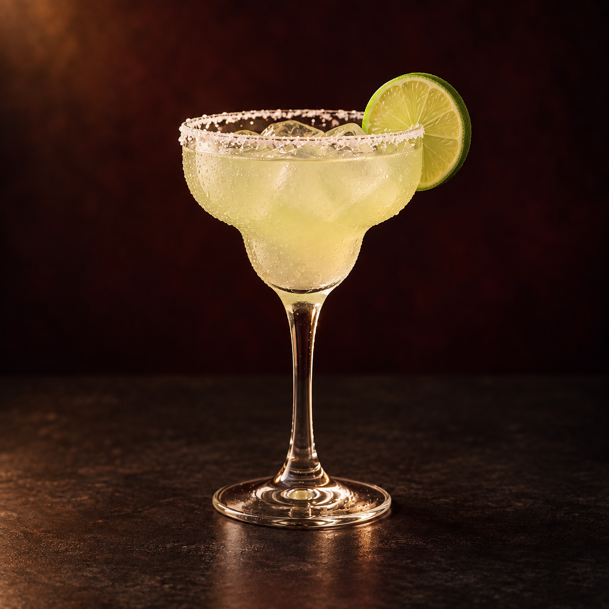
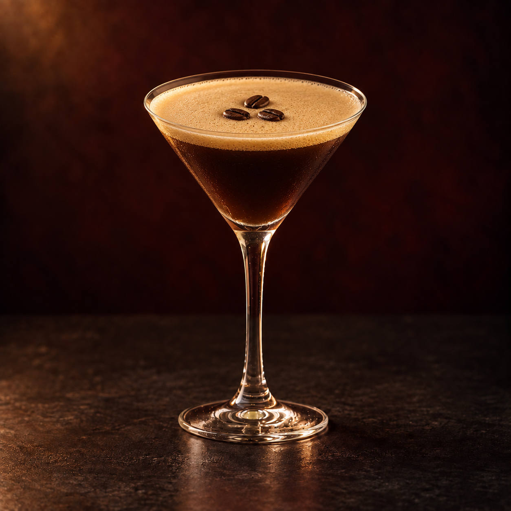
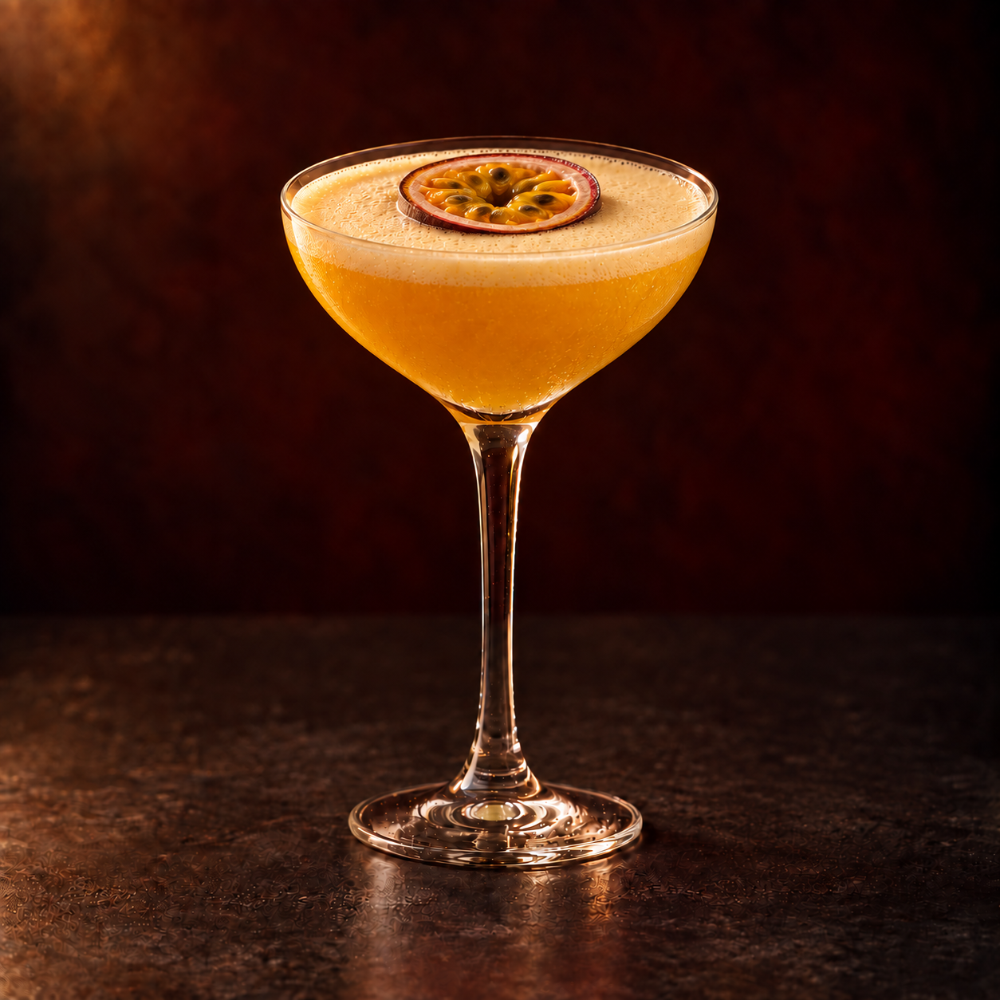
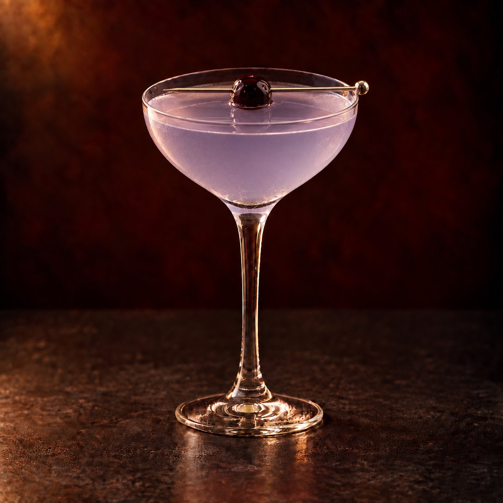
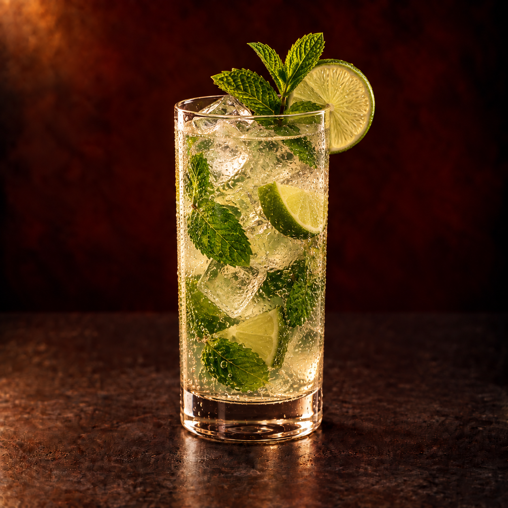

Sex on the Beach
A fruity cocktail combining peach, orange and cranberry for a refreshing, colourful drink.
Ingredients
- Vodka
- Peach schnapps
- Orange juice
- Cranberry juice
Good drinks. Great company.
Discover six classic favourites, from fresh and fruity drinks to rich coffee flavours.

A fruity cocktail combining peach, orange and cranberry for a refreshing, colourful drink.

A bright, citrus cocktail with tequila and fresh lime, served with a salted rim.

A rich coffee cocktail with a smooth foam top, balancing strong espresso with a touch of sweetness.

A tropical combination of passion fruit and vanilla, served with a small glass of prosecco on the side.

A delicate gin cocktail with floral notes, a hint of cherry and a fresh lemon finish.

A refreshing mix of rum, lime and fresh mint, topped with soda water for a light, sparkling finish.